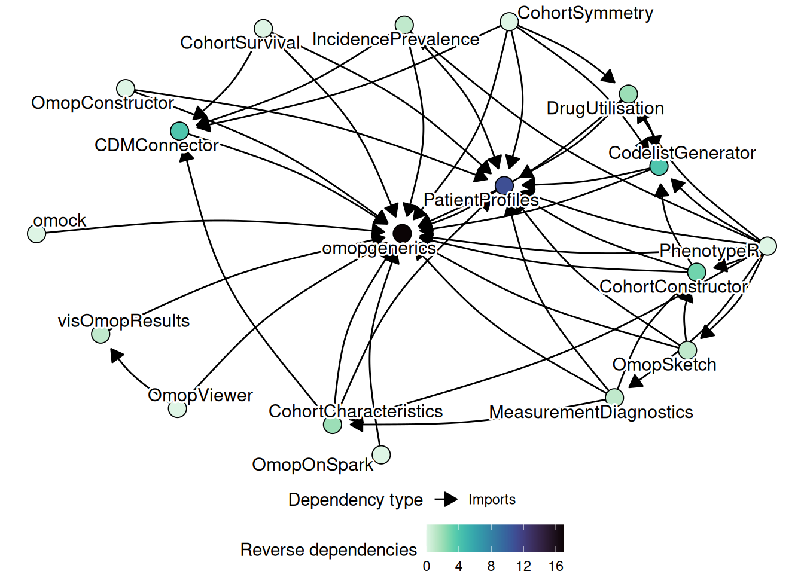
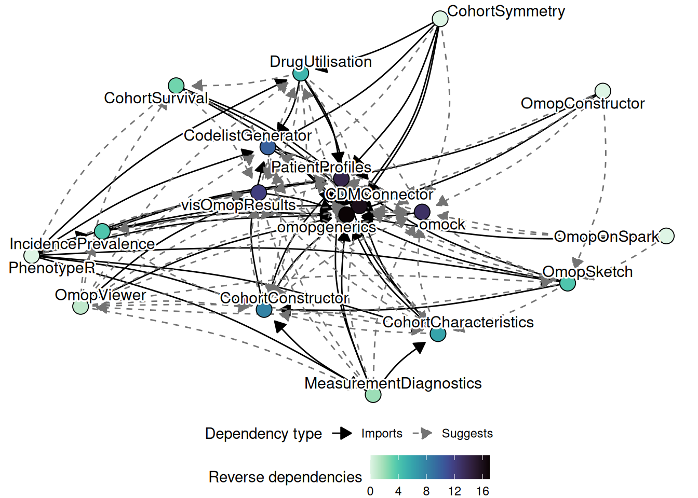

2 Ecosystem
This chapter gives an overview of the ecosystem of R packages built for the OMOP Common Data Model (CDM) that your new package will become part of. Understanding the ecosystem — which packages exist, what they do, and how they relate to each other — is essential context before writing a single line of code. It will help you avoid reinventing existing functionality, identify the right packages to depend on, and make deliberate choices about where your package sits in the broader landscape.
2.1 Motivation
The OMOP CDM is a fixed, well-documented structure: every database mapped to it has the same tables, the same column names, and the same vocabulary conventions. This predictability is a major asset. It means that code written against one OMOP CDM instance should work against any other, regardless of the underlying database management system (DBMS) or institution.
The ecosystem described in this chapter exploits that predictability. Rather than writing raw SQL — which is verbose, fragile across different DBMS back-ends, and hard to compose — the packages in this ecosystem are built entirely in R, on top of dplyr and dbplyr. This means that:
- No Java and no SQL need to be written by package developers or end users.
- Analysis pipelines are expressed using familiar tidyverse-style code and the pipe operator.
- The same pipeline runs unchanged against DuckDB, PostgreSQL, SQL Server, Spark, and other back-ends.
- Packages are released on CRAN, making installation straightforward.
The foundation is the observation that dplyr verbs applied to a lazy tbl object (a remote table reference) are automatically translated to SQL by dbplyr and executed in the database. Package developers in this ecosystem work at the level of these lazy table references rather than materialising data into R unless absolutely necessary.
2.2 Package groups
The ecosystem is organised into six functional groups. Each group addresses a distinct concern, and packages within a group share conventions and interfaces.
2.2.1 Core
The core packages define the shared vocabulary — classes, methods, and synthetic data — that all other packages build on. Depending on one or more core packages is expected; depending on packages in other groups is a deliberate choice that should be made carefully (see Chapter 5).
| Package | Purpose |
|---|---|
omopgenerics |
Defines the central classes (cdm_reference, cohort_table, summarised_result, codelists) and their generic methods. Every package in the ecosystem imports this. |
omock |
Creates synthetic OMOP CDM datasets for use in tests and examples. Pipeable API for building up only the tables you need. |
visOmopResults |
Provides tools for formatting and visualising summarised_result objects as tables and plots. Also used by analytics packages to present results. |
CodelistGenerator |
Generates and manages clinical code lists against the OMOP vocabulary. Also serves as the authoritative source for codelist-related operations across the ecosystem. |
PatientProfiles |
Adds patient-level feature columns (demographics, intersection flags, date-based variables) to any cohort table. Used internally by many analytics packages. |
2.2.2 Back-end
Back-end packages handle database connectivity. They are responsible for creating the cdm_reference object — the central object of the whole ecosystem — against a particular database technology. End users typically load one back-end package; package developers should not need to depend on them directly.
| Package | Purpose |
|---|---|
CDMConnector |
The primary back-end for connecting to any DBI-compatible database (DuckDB, PostgreSQL, SQL Server, Redshift, etc.). |
OmopOnDuckDB |
Specialised DuckDB back-end, including support for reading Parquet files directly. |
OmopOnPostgres |
Specialised PostgreSQL back-end, including support for native indexes. |
OmopOnSqlServer |
Specialised SQL Server and Synapse back-end. |
OmopOnSpark |
Back-end for Apache Spark deployments. |
2.2.3 Analytics
Analytics packages implement the epidemiological methods that are the primary output of studies run on OMOP CDM data. They all take a cdm_reference and one or more cohort_table objects as input, and return results in the summarised_result format.
| Package | Purpose |
|---|---|
CohortConstructor |
Builds and refines study cohorts from base clinical events. |
IncidencePrevalence |
Estimates incidence rates and prevalence from denominator and outcome cohorts. |
DrugUtilisation |
Characterises drug use: dose, duration, indication, discontinuation. |
CohortCharacteristics |
Summarises cohort demographics, comorbidities, and overlap between cohorts. |
CohortSurvival |
Estimates survival probabilities and competing risks from cohort data. |
CohortSymmetry |
Performs sequence symmetry analysis between two drug or exposure cohorts. |
OmopSketch |
Summarises the content of an OMOP CDM instance: record counts, trends, missing data. Also used as a diagnostic tool. |
2.2.4 Diagnostics
Diagnostics packages assess the quality and fitness-for-purpose of codelists and cohorts before and after they are used in a study.
| Package | Purpose |
|---|---|
CodelistGenerator |
Codelist diagnostics (also listed in Core). |
OmopSketch |
Database-level diagnostics (also listed in Analytics). |
PhenotypeR |
Runs a full suite of diagnostics at the database, codelist, cohort, and population level. |
MeasurementDiagnostics |
Diagnostics specific to codelists built from measurement and observation domains. |
2.2.5 ETL
| Package | Purpose |
|---|---|
OmopConstructor |
Builds derived OMOP CDM tables (observation period, drug era, etc.) from source data already in OMOP format. Also runs Achilles analyses. |
2.2.6 Visualisation
| Package | Purpose |
|---|---|
visOmopResults |
Formatted tables and plots from summarised_result objects (also listed in Core). |
OmopViewer |
Generates interactive Shiny applications automatically from summarised_result objects. |
2.3 How the packages fit together
The diagram below captures the dependency structure of the ecosystem. omopgenerics is the central node: almost every package in the ecosystem imports it. PatientProfiles and CodelistGenerator sit just above it, providing functionality that is reused widely by analytics packages. The back-end packages and omock are largely independent of each other; they are connected to the rest of the ecosystem only through the shared cdm_reference class.

A key design principle is that the result model is standardised. All analytics packages return a summarised_result object (defined in omopgenerics). This means that visOmopResults and OmopViewer work without modification across every package that produces results — a developer working on, say, CohortSurvival does not need to write any bespoke visualisation code.
Similarly, the cohort model is standardised. A cohort_table produced by CohortConstructor can be passed directly to IncidencePrevalence, DrugUtilisation, CohortCharacteristics, or any other analytics package. The shared contract means pipelines can be composed without glue code.
2.4 How your package fits in
Before writing any code, locate your package in this map. There are a few common situations:
You are adding a new analytics method. Your package should import omopgenerics (for the cdm_reference and cohort_table classes), likely import PatientProfiles (for adding patient features to your cohort), and return results as a summarised_result. You should use omock and CDMConnector in your test suite but list them under Suggests, not Imports. See Chapter 5 for the distinction.
You are adding a new diagnostic tool. Similar to analytics, but you may also want to depend on CodelistGenerator for codelist management. Consider whether PhenotypeR already covers your use case, or whether your tool is genuinely complementary.
You are adding a new back-end. Your package should implement the cdm_source interface defined in omopgenerics (see newCdmSource()). Your only required import is omopgenerics; you should not depend on CDMConnector or other back-end packages.
You are adding a utility or helper package. If your package provides functionality that multiple other packages will use, it belongs in the Core group. Treat it as a potential dependency of many downstream packages and be especially conservative about what it depends on — every import you add is propagated to all packages that depend on you.
A practical rule of thumb: the more packages that will depend on yours, the lighter your own dependency footprint should be. A package that sits at the base of the dependency graph needs to be especially stable and minimal. A package at the periphery can afford to be more opinionated.
2.5 Package statistics
The ecosystem is under active development with frequent CRAN releases. As of 05 Mar 2026 there are around 22 packages in the ecosystem, 18 of which are on CRAN, with a combined total of 277 CRAN releases and 4.07984^{5} total CRAN downloads.
The high release frequency is intentional. The ecosystem follows a continuous delivery philosophy: packages are kept in a releasable state at all times, which allows rapid iteration and fast response to bugs. As a new package developer you should expect to release early and often rather than waiting for a “complete” feature set.
2.6 Further reading
- The OxInfer software page provides an up-to-date summary of all packages, their CRAN versions, and a visualisation of the inter-package dependency graph.
- The ecosystem presentation gives a walkthrough of the history and structure of the ecosystem, including a detailed tour of
omopgenerics. - The Book of OHDSI provides essential background on the OMOP CDM itself.
- The companion book Tidy R programming with the OMOP Common Data Model covers how to use the ecosystem as a researcher, which is useful background even if your focus is package development.